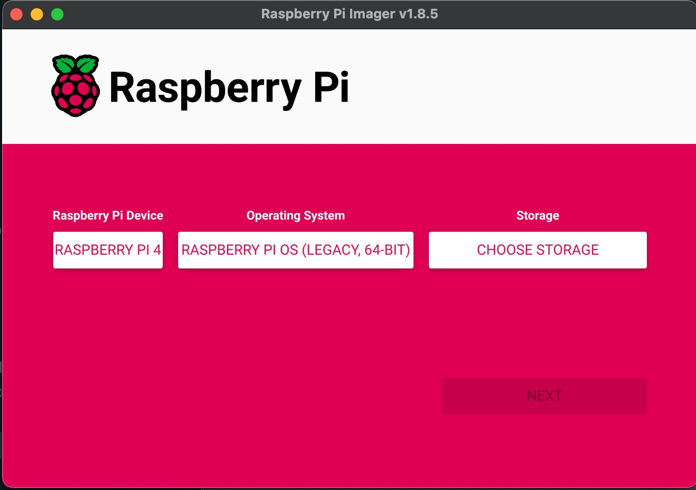

Setup basic_bot on a Raspberry Pi4 with Raspian Bullseye
...for basic_bot, ovencv and tflite
Flash and Boot
First you need to flash an image to a microcard reader using the Raspberry Pi installer.
Debian Bookworm is the new Raspian Bullseye. Good article on the differences. The rest of this guide is specific to Bullseye.
If you are setting up a new Raspberry Pi4 or Pi5, you should probably use the latest OS (Bookworm) unless you have a real need to use Bullseye. See also our guide for installing on Pi4 or Pi5 with Debian Bookwork.
To validate basic bot, I used the Raspberry Installer to flash a micro SSD. I selected Bullseye from the legacy OSs.

SSH into the pi
Verify that Raspian/Debian bullseye was installed:
bee@pi4:~ $ cat /etc/os-release
PRETTY_NAME="Debian GNU/Linux 11 (bullseye)"
NAME="Debian GNU/Linux"
VERSION_ID="11"
VERSION="11 (bullseye)"
VERSION_CODENAME=bullseye
ID=debian
HOME_URL="https://www.debian.org/"
SUPPORT_URL="https://www.debian.org/support"
BUG_REPORT_URL="https://bugs.debian.org/"```
Update and upgrade OS
SSH back into Raspberry Pi after reboot.Check versions:
bee@pi4:~ $ python --version
Python 3.9.2
bee@pi4:~ $ python -m pip --version
pip 20.3.4 from /usr/lib/python3/dist-packages/pip (python 3.9)
Install Basic Bot
Follow the instructions in Getting Started for installing and running basic_bot.
Use picamera2 instead of opencv if using ribbon cable camera
As of Feb 7, 2025, OpenCV camera capture will NOT work on Debian Bullseye or Bookworm with a ribbon cable camera.
You must either use a USB camera or use the basic_bot.commons.camera_picamera
module.
See the API docs for using camera_picamera for more information about how to use.